Redrawn from the measured geometry of your two floor plans. Every door, window, balcony and the stair position comes from the PDF drawings, so each elevation lines up with the plan. The external stair is now a covered volume that forms part of the east facade.
Generated from the same data as the elevations. North and East are the two road-facing fronts.
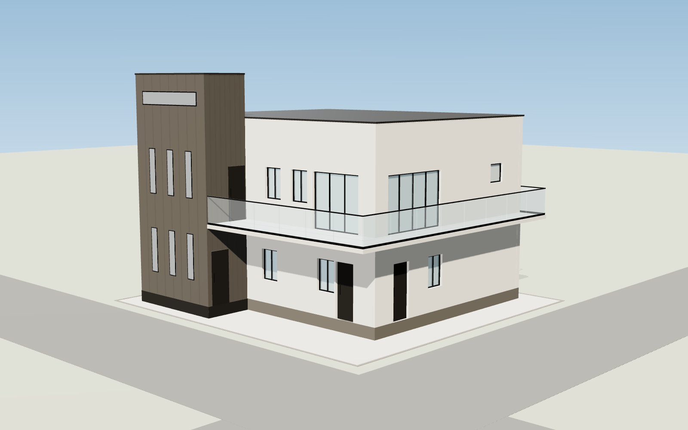
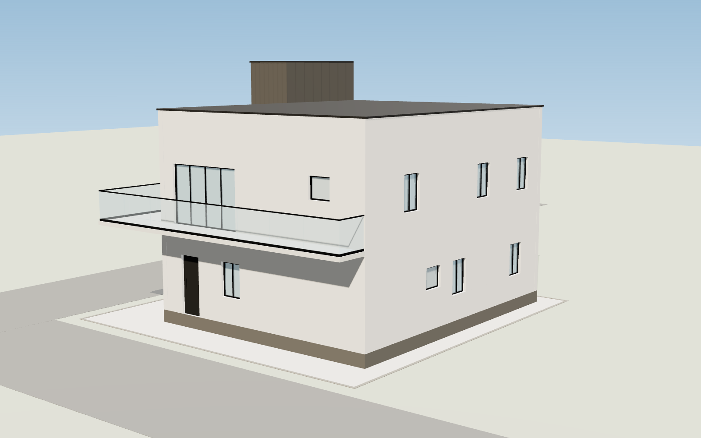
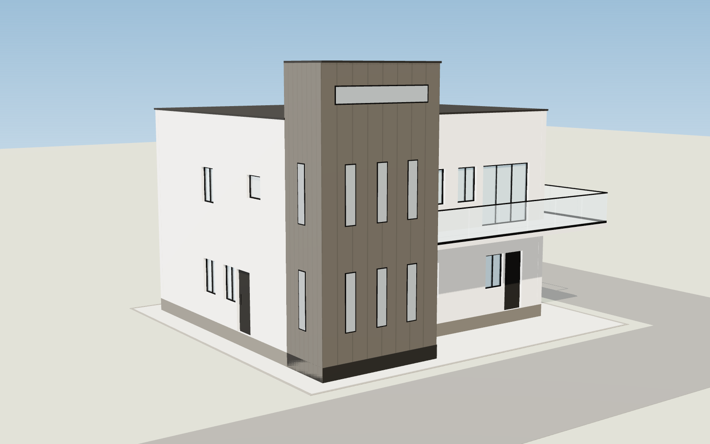
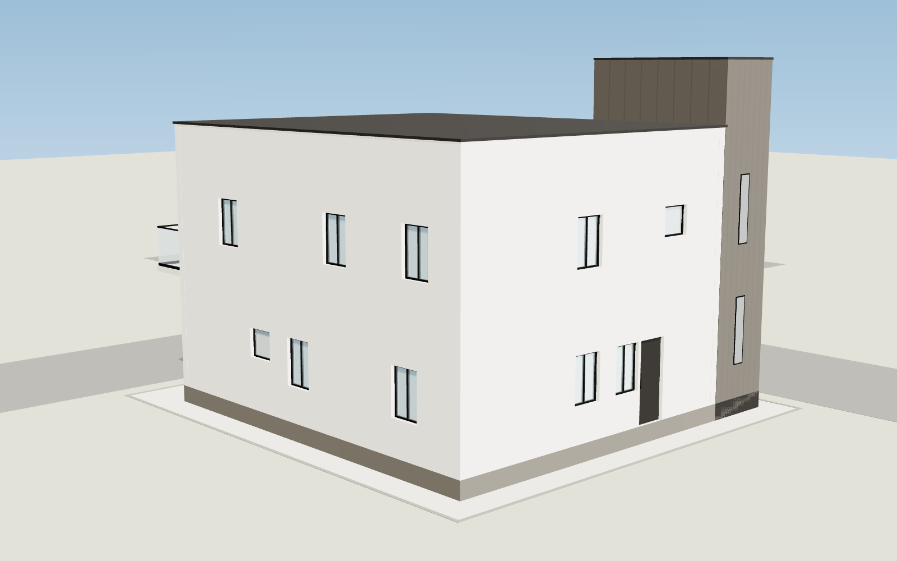
Faces North Road. Ground floor: entry door and Drawing window. First floor: four-panel sliding glass door onto the 4'-0" balcony behind a frameless glass balustrade, plus the toilet window.
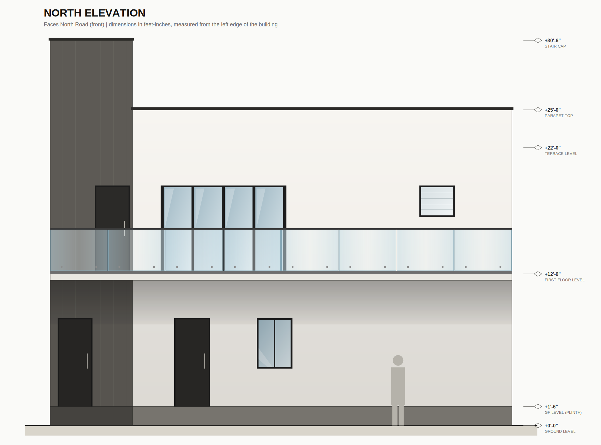
| Floor | Type | Room / use | Position from left edge | Width | Sill to head (above floor) |
|---|---|---|---|---|---|
| Ground | Door | Door (north entry) | 3'-4" to 6'-2" | 2'-10" | 0'-0" to 7'-0" |
| Ground | Window | Drawing window | 9'-10" to 12'-8" | 2'-10" | 3'-0" to 7'-0" |
| First | Sliding glass door | Sit-out sliding door to north balcony | 2'-3" to 12'-2" | 9'-11" | 0'-0" to 7'-0" |
| First | Toilet window (frosted) | Toilet window | 22'-8" to 25'-6" | 2'-10" | 4'-6" to 7'-0" |
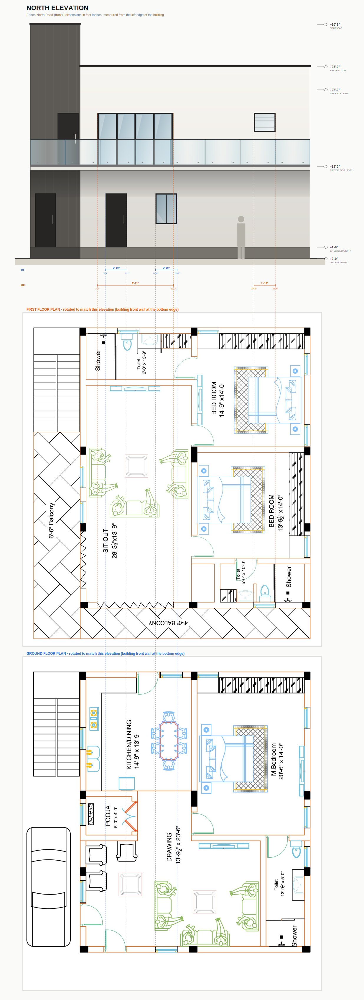
Faces East Road. The covered stair is the dark volume at the south end; the 6'-6" balcony shades the car porch. Ground floor: main entrance, Drawing and Pooja windows (the Kitchen window is inside the stair enclosure).
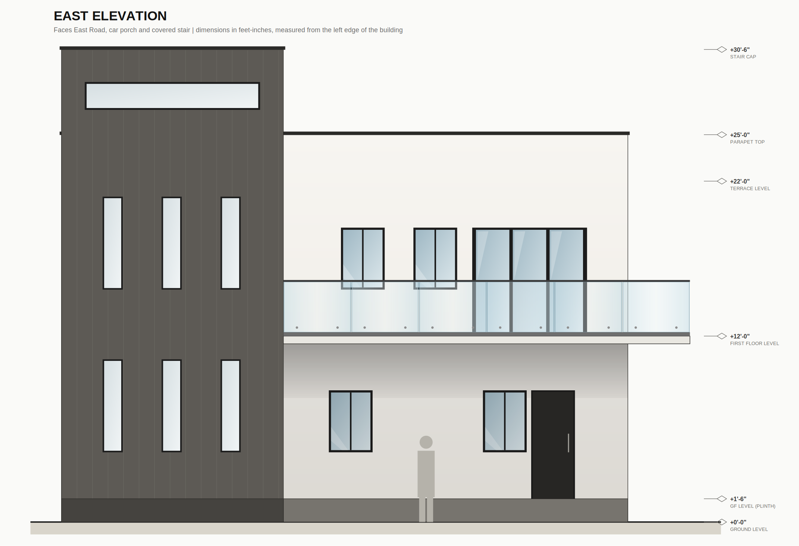
| Floor | Type | Room / use | Position from left edge | Width | Sill to head (above floor) |
|---|---|---|---|---|---|
| Ground | Window | Kitchen window (opens into covered stair) | 7'-4" to 10'-1" | 2'-10" | 3'-0" to 7'-0" |
| Ground | Window | Pooja window | 17'-3" to 20'-1" | 2'-10" | 3'-0" to 7'-0" |
| Ground | Window | Drawing window | 27'-2" to 30'-0" | 2'-10" | 3'-0" to 7'-0" |
| Ground | Door | Main entrance | 30'-3" to 33'-1" | 2'-10" | 0'-0" to 7'-0" |
| First | Window | Sit-out window | 18'-0" to 20'-10" | 2'-10" | 3'-0" to 7'-0" |
| First | Window | Sit-out window | 22'-8" to 25'-6" | 2'-10" | 3'-0" to 7'-0" |
| First | Sliding glass door | Sit-out door to east balcony | 26'-6" to 33'-10" | 7'-5" | 0'-0" to 7'-0" |
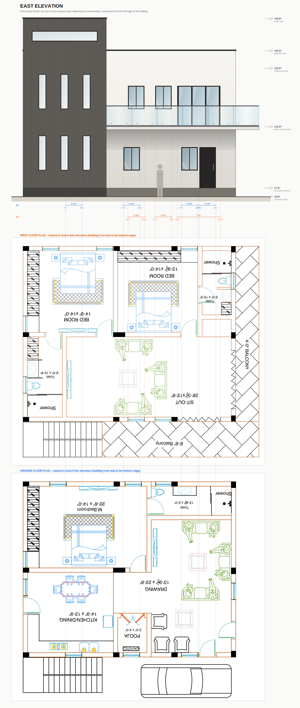
Side elevation, 3'-0" setback. Kitchen service door, dining and master bedroom windows below; toilet and bedroom windows above. The stair volume is flush with this face.
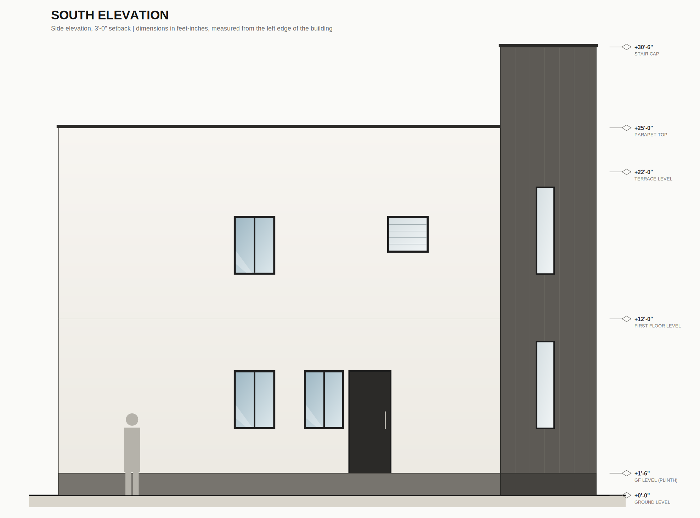
| Floor | Type | Room / use | Position from left edge | Width | Sill to head (above floor) |
|---|---|---|---|---|---|
| Ground | Window | Master bedroom window | 11'-11" to 14'-9" | 2'-10" | 3'-0" to 7'-0" |
| Ground | Window | Dining window | 16'-8" to 19'-5" | 2'-9" | 3'-0" to 7'-0" |
| Ground | Door | Kitchen service door | 19'-8" to 22'-7" | 2'-11" | 0'-0" to 7'-0" |
| First | Window | Bedroom window | 11'-11" to 14'-9" | 2'-10" | 3'-0" to 7'-0" |
| First | Toilet window (frosted) | Toilet window | 22'-4" to 25'-2" | 2'-10" | 4'-6" to 7'-0" |
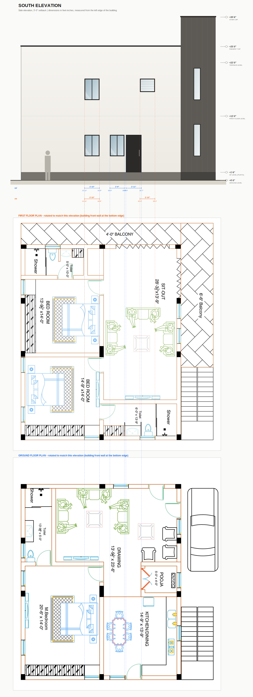
Rear elevation, 4'-0" setback. Three windows per floor as drawn on the plans; the north balcony's glass return shows at the left and the stair cap rises behind the parapet.
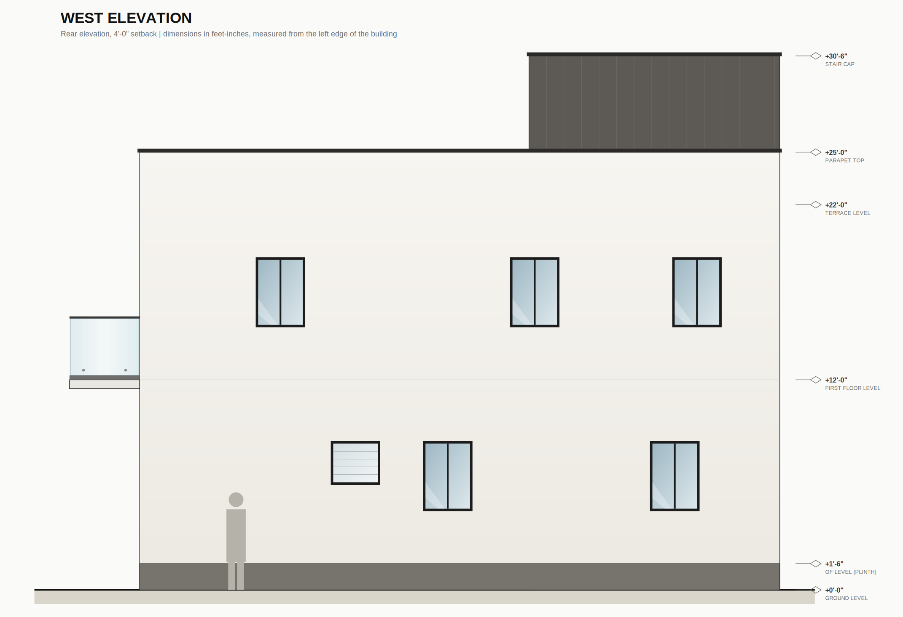
| Floor | Type | Room / use | Position from left edge | Width | Sill to head (above floor) |
|---|---|---|---|---|---|
| Ground | Toilet window (frosted) | Toilet window | 10'-11" to 13'-9" | 2'-10" | 4'-6" to 7'-0" |
| Ground | Window | Master bedroom window | 16'-2" to 19'-0" | 2'-10" | 3'-0" to 7'-0" |
| Ground | Window | Master bedroom window | 29'-1" to 31'-11" | 2'-10" | 3'-0" to 7'-0" |
| First | Window | Bedroom window | 6'-7" to 9'-5" | 2'-10" | 3'-0" to 7'-0" |
| First | Window | Bedroom window | 21'-1" to 23'-11" | 2'-10" | 3'-0" to 7'-0" |
| First | Window | Bedroom window | 30'-4" to 33'-2" | 2'-10" | 3'-0" to 7'-0" |
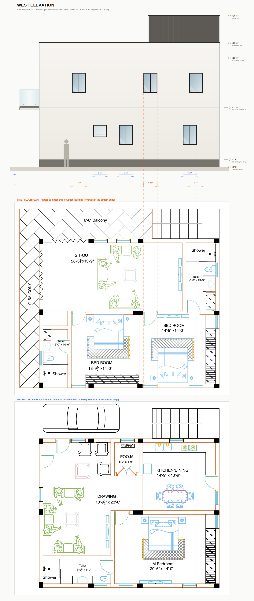
The sheets are rotated: on the plan, North Road is on the left and East Road is on top (the north arrow points left). Earlier concept images had the sides mirrored.
Each elevation has an alignment sheet: the plan is rotated so the facade faces you, and dashed lines run from every opening on the plan up into the elevation (GF blue, FF orange).
The plans give plan positions only, so these items are design choices rather than plan data.